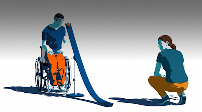
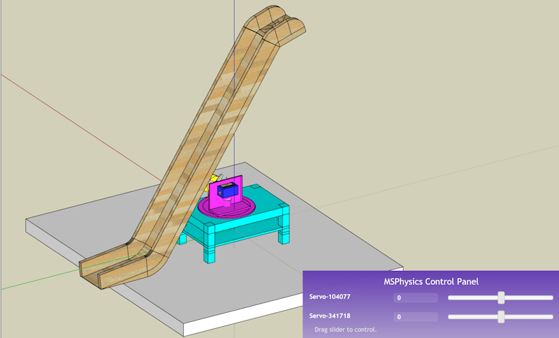
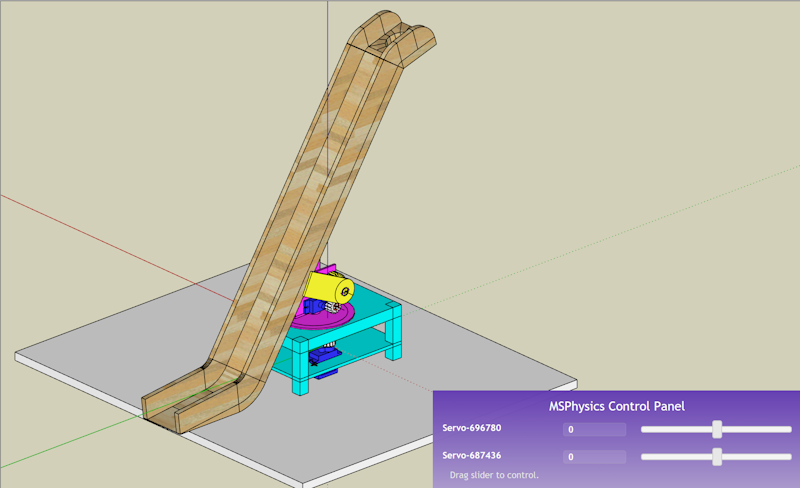
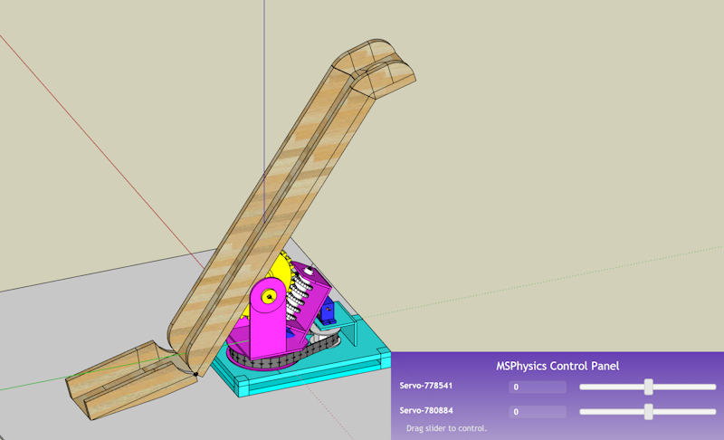
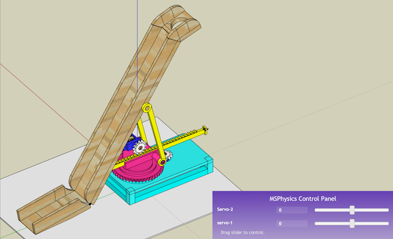
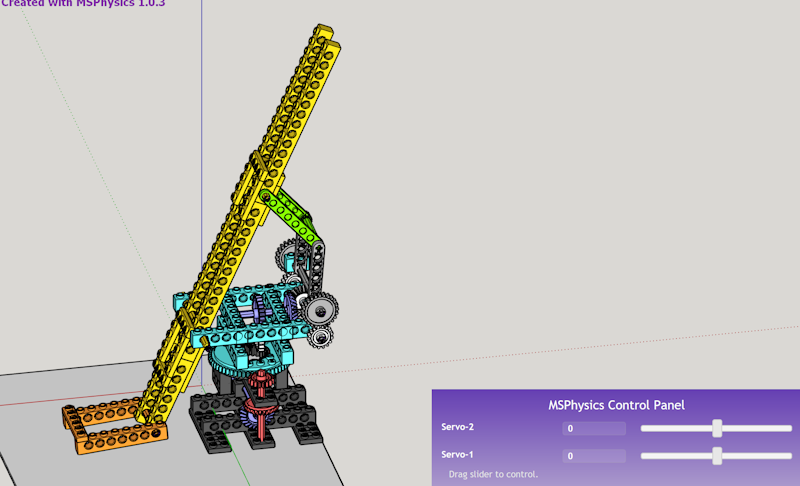
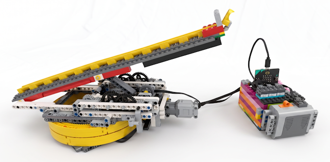
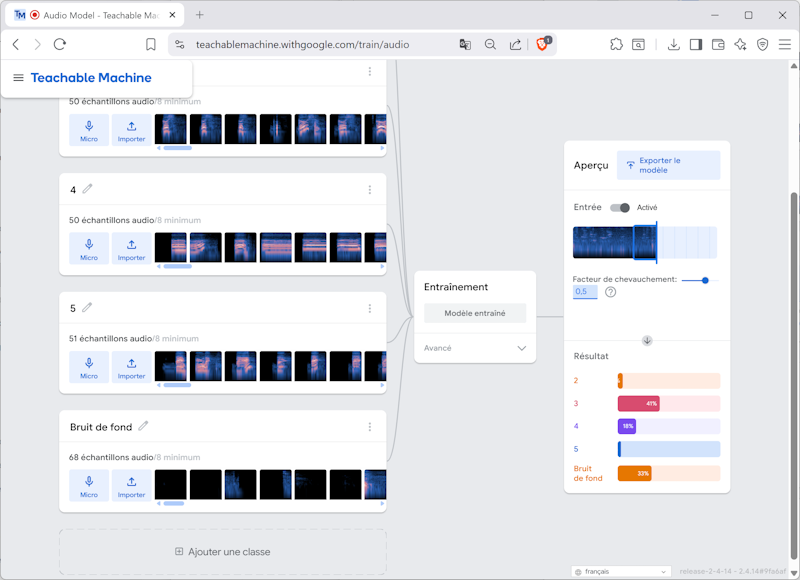
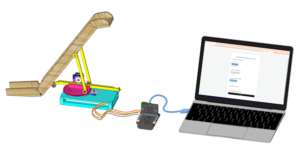
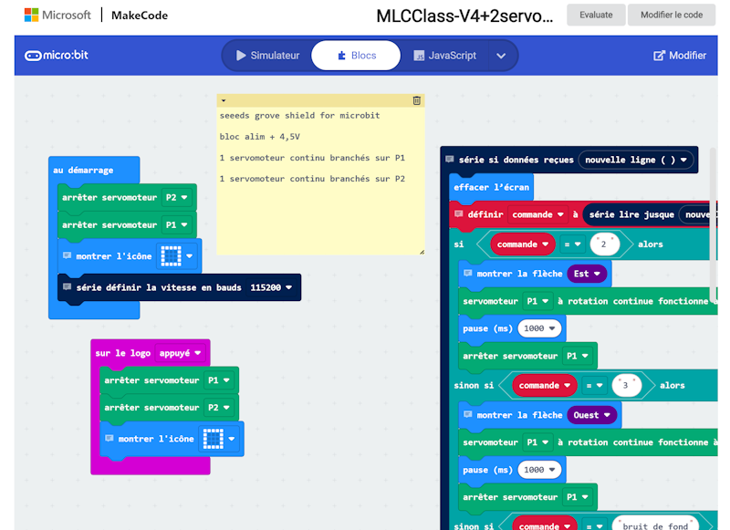

La rampe de Boccia robotisée avec commande vocale
A. La boccia : un sport
Sport apparenté à la pétanque. la boccia est pratiquée en catégorie handisport à l’aide d’une rampe et nécessite un assistant :. Ce dernier suit les instructions du joueur pour faire les réglages de la rampe. On souhaite créer une rampe qui réagit directement aux commandes du joueur avec une commande vocale.
B. Modéliser la structure mécanique
Les modélisations suivantes montrent les mouvements de chaque mécanisme.
Logiciel gratuit Sketchup Make 2017+ plugin MSphysics
V10 RampeRobot-V10.skp Servomoteur S1-S2 en direct 
V20 RampeRobot-V20.skp Servomoteur S1 + roues dentées 1 - 2
Servomoteur S2 + roues dentées 3 - 4
V30 RampeRobot-V30.9.skp Servomoteur S1 + poulie courroie
Servomoteur S2 + vis sans fin et roue dentée

V40 RampeRobot-V40.1.skp Servomoteur S1 + roue dentée et couronne
Servomoteur S2 + roue dentée et crémaillère

V50 RampeRobot-V50.7.skp Servomoteur S1 + couronne et roue denté
Servomoteur S2 + pignon conique

V60 Rampe Robot LEGO M1 moteur et réducteur Lego
M2 moteur et réducteur Lego

La maquette Lego V60:
C. Commande vocale IA – Teachable Machine
https://teachablemachine.withgoogle.com/
J'entraine une IA à reconnaitre ma voix et les mots tels que je les prononce "Droite, Gauche, Haut, Bas, Stop" et à la fin du processus j'obtiens mon lien partageable : https://teachablemachine.withgoogle.com/models/ykFvEIlwa/
D. Interface de liaison : Le BRIDGE
Pour faire la liaison entre la carte microbit et le model de langage IA en ligne, on utilise le port USB et un navigateur. Un script JAVA va ouvrir le port USB et le microphone de l’ordi et se connecter avec le model entraîné de teachablemachine.

E. Programmer le micro-contrôleur : Makecode
https://makecode.microbit.org/S44308-89395-53171-60032
La carte microbit pilote les actionneurs de la maquette à travers ce programme makecode en blocks. Dans la boucle « série si données reçus nouvelle ligne » elle utilise le port USB de l’ordinateur pour se mettre en relation avec le model de langage IA. C’est de cette manière qu’elle pourra interpréter commande = 2 ou 3 ou 4 ou 5 - car cela correspond à nos classes d’échantillons audio de teachabelmachine